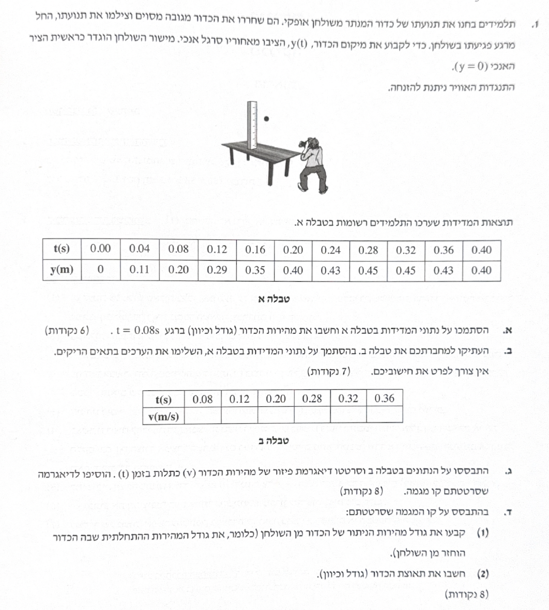

פתרון מודרך, מוסבר ומפורט צעד-אחר-צעד לתלמידי 5 יח"ל בפיזיקה
תלמידים חקרו את תנועתו של כדור המנתר משולחן אופקי. הכדור שוחרר מגובה מסוים וצולם החל מרגע פגיעתו בשולחן (\(t=0\)). מאחורי השולחן הוצב סרגל אנכי. מישור השולחן הוגדר כראשית ציר ה-\(y\) האנכי (\(y=0\)), כאשר הכיוון החיובי של הציר הוא כלפי מעלה. בשלב ראשון, נתון כי התנגדות האוויר זניחה.
| \(t\text{ (s)}\) | 0.00 | 0.04 | 0.08 | 0.12 | 0.16 | 0.20 | 0.24 | 0.28 | 0.32 | 0.36 | 0.40 |
|---|---|---|---|---|---|---|---|---|---|---|---|
| \(y\text{ (m)}\) | 0 | 0.11 | 0.20 | 0.29 | 0.35 | 0.40 | 0.43 | 0.45 | 0.45 | 0.43 | 0.40 |

נחשב את המהירות הרגעית ברגע מסוים מתוך טבלת ערכים בדידים באמצעות קירוב המהירות הממוצעת באינטרוול זמן קטן וסימטרי סביבו. נשתמש בערכי הזמן והמקום שלפני ואחרי הרגע \(t = 0.08\text{ s}\):
את המהירות הרגעית של הכדור ברגע \(t = 0.08\text{ s}\), כולל גודלה וכיוונה.
נציב את הנתונים בנוסחת המהירות הממוצעת עבור המרווח שבין \(0.04\text{ s}\) ל-\(0.12\text{ s}\):
התוצאה שהתקבלה היא חיובית. מאחר שהגדרנו את הכיוון החיובי של ציר ה-\(y\) כלפי מעלה, סימן חיובי פירושו שהכדור נע בכיוון מעלה.
גודל מהירות הכדור ברגע \(t = 0.08\text{ s}\) הוא 2.25 m/s, וכיוונה הוא כלפי מעלה (בכיוון החיובי של ציר ה-\(y\)).
נתוני המיקום והזמן מטבלה א'. עלינו להשתמש באותה השיטה של סעיף א' כדי לחשב את המהירויות ברגעי הזמן המבוקשים בטבלה ב'.
את ערכי המהירות הרגעית \(v\text{ (m/s)}\) עבור רגעי הזמן הבאים: \(0.12\text{ s}\), \(0.20\text{ s}\), \(0.28\text{ s}\), \(0.32\text{ s}\), \(0.36\text{ s}\).
נבצע את החישוב עבור כל אחד מהזמנים הנדרשים במרווח זמן סימטרי סביבו:
| \(t\text{ (s)}\) | 0.08 | 0.12 | 0.20 | 0.28 | 0.32 | 0.36 |
|---|---|---|---|---|---|---|
| \(v\text{ (m/s)}\) | 2.25 | 1.88 | 1.00 | 0.250 | -0.250 | -0.625 |
הטבלה הושלמה בהצלחה עם הערכים המחושבים ומעוגלת ל-3 ספרות מהותיות. שימו לב שהמהירויות לאחר רגע שיא הגובה (\(t \approx 0.30\text{ s}\)) הופכות לשליליות, כיוון שהכדור מתחיל לנוע כלפי מטה.
זוגות הערכים של זמנים ומהירויות מתוך טבלה ב':
סרטוט של גרף פיזור המציג את המהירות כפונקציה של הזמן, יחד עם קו מגמה לינארי ישר שעובר בצורה המיטבית ביותר דרך הנקודות.
להלן הגרף המדויק הכולל את נקודות המדידה וקו המגמה הלינארי המקשר ביניהן:
דיאגרמת הפיזור סורטטה בגרף ה-SVG המוצג לעיל. קו המגמה הלינארי (האדום) עובר בצורה מושלמת בין נקודות המדידה המבוססות על טבלה ב' (הנקודות הכחולות).
קו המגמה הלינארי המייצג את פונקציית המהירות כפונקציה של הזמן, כפי שסורטט בסעיף ג'.
על פי הגרף שסורטט ועל ידי חיוץ (אקסטרפולציה) של קו המגמה עד לרגע \(t=0\): נבחר שתי נקודות על קו המגמה כדי למצוא את משוואתו המדויקת. ניקח למשל שתי נקודות מהטבלה שנמצאות בדיוק על קו המגמה: \((t_1 = 0.20\text{ s}, v_1 = 1.00\text{ m/s})\) ו-\((t_2 = 0.28\text{ s}, v_2 = 0.18\text{ m/s})\):
כעת נמצא את החיתוך \(v_0\) על ידי הצבת הנקודה הראשונה:
בחישוב המבוסס על קו המגמה הכללי והנקודות, נקודת החיתוך עם ציר המהירות היא בערך \(3.07\text{ m/s}\) (או בטווח המקובל שבין \(3.0\text{ m/s}\) ל-\(3.1\text{ m/s}\)).
נבחר שתי נקודות קצוות על קו המגמה לצורך דיוק מרבי בחישוב השיפוע:
נקודה א': \((t = 0.08\text{ s}, v = 2.25\text{ m/s})\)
נקודה ב': \((t = 0.36\text{ s}, v = -0.625\text{ m/s})\)
שיפוע הגרף הוא שלילי וערכו קרוב מאוד ל-\(10\text{ m/s}^2\) (התואם את ערך תאוצת הנפילה החופשית המקורב \(g = 10\text{ m/s}^2\)). הסימן השלילי מצביע על כך שהתאוצה פועלת בכיוון הפוך לכיוון החיובי של הציר שנבחר (כלומר, כיוונה הוא כלפי מטה).
גודל מהירות הניתור ההתחלתית הוא 3.07 m/s. תאוצת הכדור היא בעלת גודל של 10.3 m/s² וכיוונה הוא כלפי מטה.
כוח התנגדות האוויר \(f_{\text{air}}\) קיים עתה, ונתון שגודלו קבוע בקירוב. כיוונו של כוח התנגדות האוויר הוא תמיד הפוך לכיוון תנועת הגוף (הפוך לכיוון המהירות).
קביעה איזה מן התרשימים 1–4 מתאר נכון איכותית את מהירות הכדור (\(v\)) כפונקציה של הזמן (\(t\)), ונימוק פיזיקלי של הבחירה.
נחלק את תנועת הכדור לשני שלבים עיקריים:
הכדור נע כלפי מעלה, לכן כוח התנגדות האוויר פועל כלפי מטה. כוח הכובד פועל תמיד כלפי מטה. שני הכוחות פועלים יחד כלפי מטה (בכיוון השלילי של הציר):
התאוצה בשלב זה היא קבועה ושלילית, וגודלה גדול מ-\(g\).
הכדור נע כלפי מטה, לכן כוח התנגדות האוויר פועל עתה כלפי מעלה (הפוך לכיוון המהירות). כוח הכובד עדיין פועל כלפי מטה. הכוחות פועלים בכיוונים מנוגדים:
התאוצה בשלב זה היא קבועה ושלילית, אך גודלה קטן מ-\(g\).
מאחר שהתאוצה מייצגת את שיפוע גרף המהירות-זמן:
התרשים המתאר נכון את מהירות הכדור הוא תרשים 1.